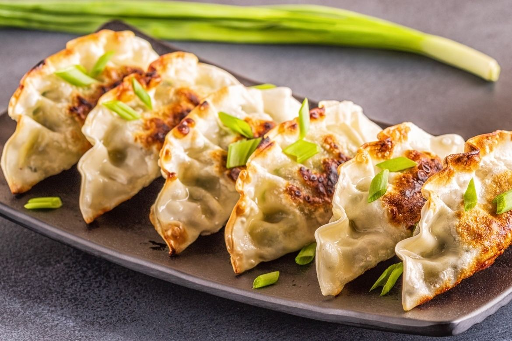
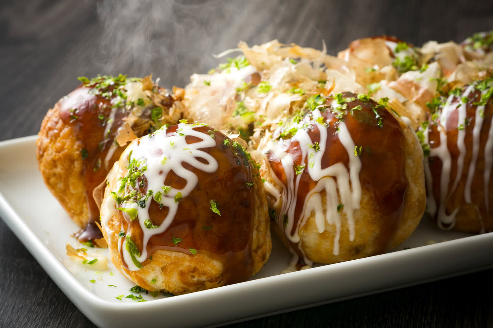
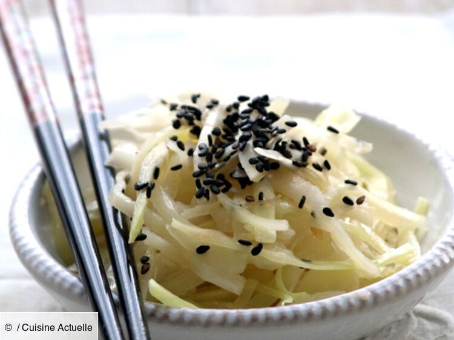
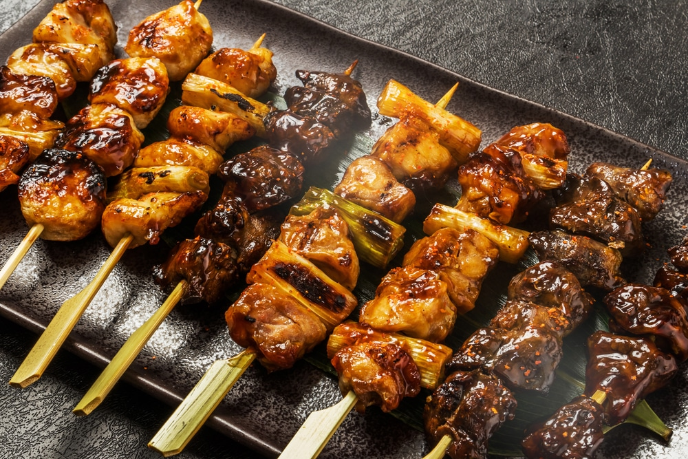
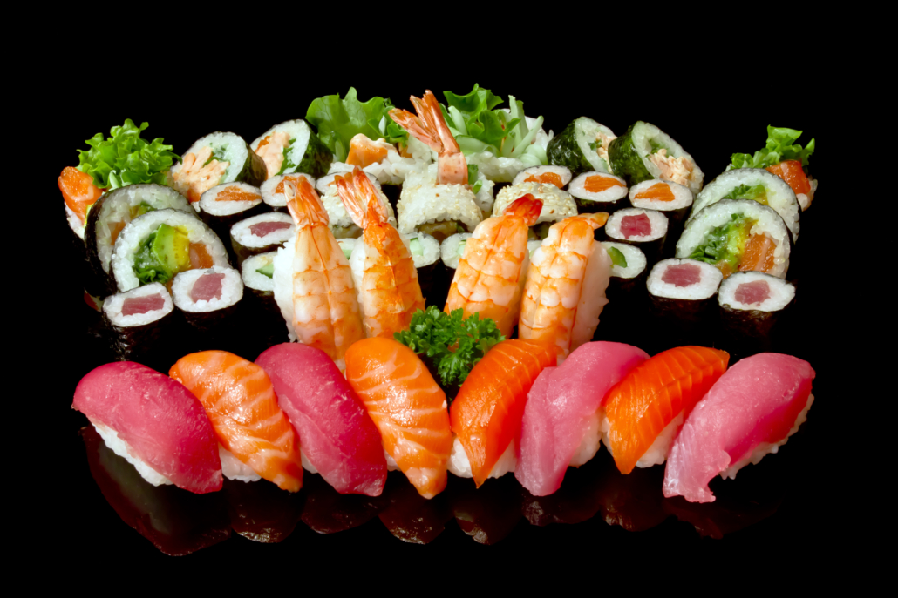
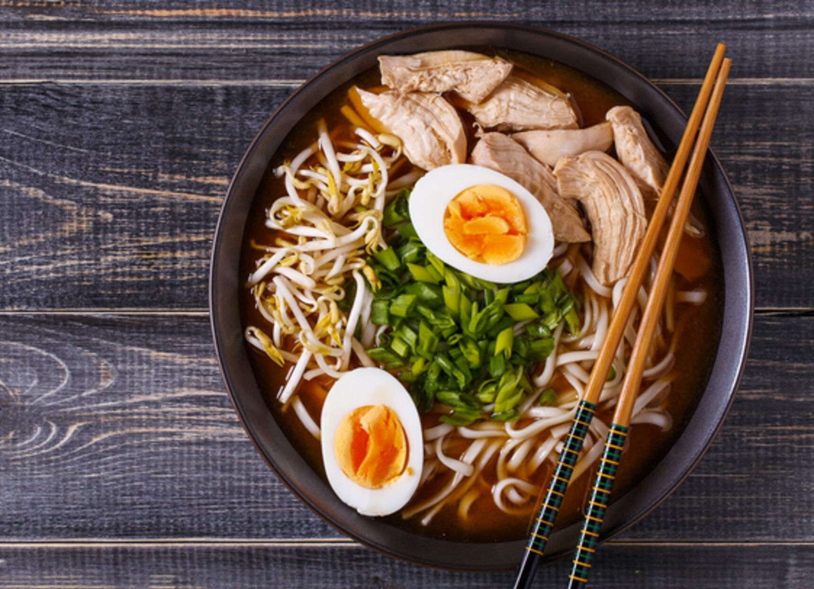
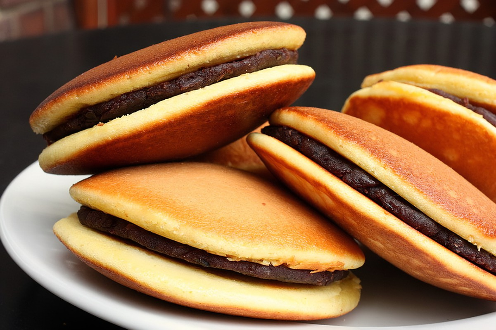
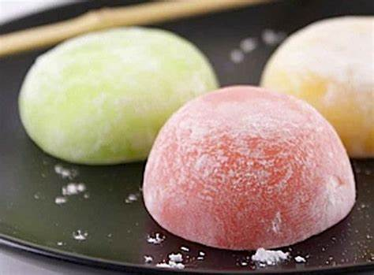

Gyoza
Les gyoza au porc sont des raviolis japonais croustillants, farcis de porc et de légumes, souvent servis avec de la sauce soja. Un vrai délice !
2.99€
Entrée

Gyoza
Les gyoza au porc sont des raviolis japonais croustillants, farcis de porc et de légumes, souvent servis avec de la sauce soja. Un vrai délice !
2.99€

Takoyaki
Le takoyaki est une spécialité japonaise : des boulettes de pâte farcies de poulpe, croustillantes à l'extérieur et moelleuses à l'intérieur, garnies de sauce et de mayonnaise. Un snack savoureux !
4.99€

Salade de choux blanc
La salade de chou blanc est un accompagnement croquant, fait de chou finement coupé et assaisonné de vinaigrette. Simple et délicieuse !
0.99€
Plat

Assiette de brochette
L'assortiment de brochettes japonaises inclut bœuf, poulet, fromage et saumon, grillées à la perfection et souvent servies avec des sauces savoureuses. Un délice !
14.99€

Assortiment de sushi
Riz vinaigré garni de poisson frais, fruits de mer et légumes. Dégustez nos nigiris, makis et sashimis. Un véritable régal pour les papilles.
29.99€

Ramen
Soupe de nouilles japonaises dans un bouillon riche, garnie de porc, d'œufs marinés et de légumes frais. Un régal réconfortant !
19.99€
Dessert
Glace (1 a 3 Boules)
Déssert crémeux et rafraîchissant à base de lait et de crème, proposé dans une variété de saveurs comme vanille, chocolat et fruits. Un délice glacé !
2.99€

Dorayaki
Gâteau japonais composé de deux pancakes moelleux, fourrés de pâte de haricots rouges sucrée. Un délice irrésistible !
2.99€

Mochi
Déssert japonais en pâte de riz gluant, souvent fourré de pâte de haricots rouges ou de crème glacée. Un petit bonheur à savourer !
3.99€